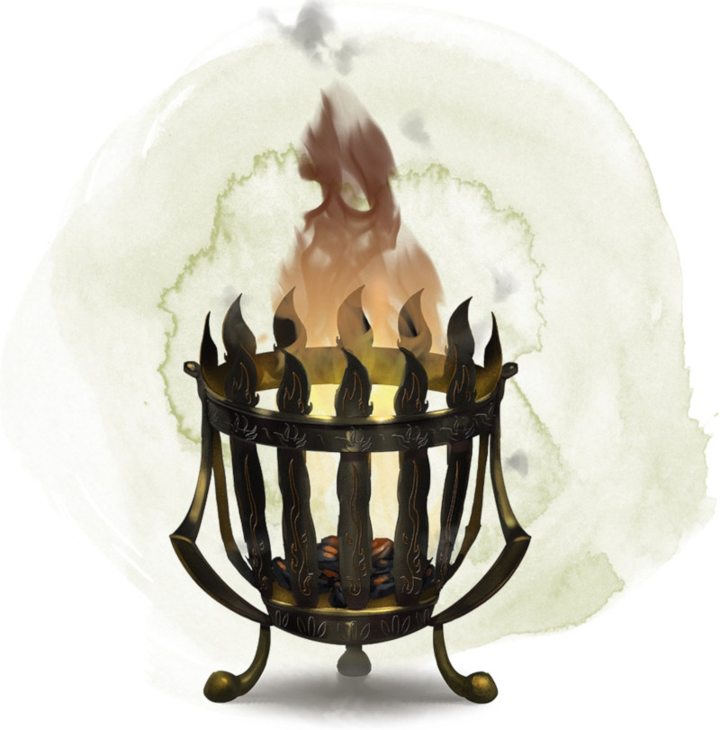

Brasero de contrôle des élémentaires du feu
[ Brazier of Commanding Fire Elementals ] [ Brasero de contrôle des élémentaires de feu ]
Objet merveilleux, rare
Tant qu'un feu brûle dans ce brasero en cuivre, vous pouvez utiliser une action pour prononcer son mot de commande et convoquer un élémentaire du feu, comme si vous aviez lancé le sort invocation d'élémentaire. Le brasero ne peut plus être utilisé de cette façon avant la prochaine aube. Le brasero pèse 2,5 kg.
Dungeon Master´s Guide (SRD)
